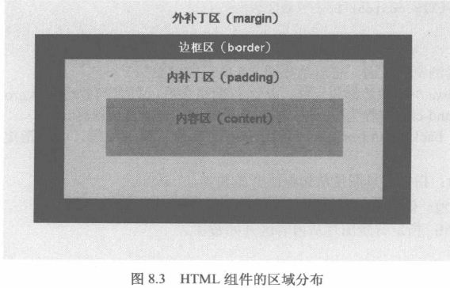

除了文本、字体属性之外，HTML页面最常用的CSS属性就是背景和边框相关属性了，通过使用背景，可以为HTML控件增加各种各样的背景颜色、
背景图片；通过边框相关属性，可以为HTML控件增加各种颜色、各种线性、粗细不等的边框。
8.1背景相关属性
背景相关属性用于控制背景色、背景图片等背景属性。在控制背景图片的同时，还可控制背景图片排列方式。有如下几个常用的背景相关属性：
- background: 设置对象的背景样式。该属性是一个复合属性，可用于同时设置背景色、背景图片、背景重复模式等等属性。为了更好
的控制背景，一般不建议通过该属性来控制背景。
- background-attachment: 设置背景图片是随对象内容滚动还是固定的，在指定该属性之前，必须指定background-image属性。该属性有以下两个值：
- scroll: 指定背景图片会随组件里内容的滚动而滚动。这是默认值。
- fixed: 背景图片固定，不会随组件里内容的滚动而滚动。
- background-color: 用于设置背景色。如果同时设置了背景色和背景图片，则背景图片将覆盖背景色。
- background-image:用于设置背景图片。如果同时设置了背景色和背景图片，则背景图片将覆盖背景色。该属性需要使用url()函数指定图片地址，
图片地址既可以是绝对地址，也可以是相对地址。
- background-position: 用于设置对象的背景图片位置，该属性值应该是两个值，它们既可以是实际的长度值，也可是百分比。如果只指定了一
个值，该值将对应横坐标，纵坐标将默认设为50%；如果指定了两个值，那么第二个值将对应纵坐标。在指定该属性之前，必须先
指定background-image属性。
- background-repeat: 适用于CSS1，用于设置对象的背景图片上会否平铺，在指定该属性之前，必须先指定background-image属性。该属性
有repeat、on-repeat、repeat-x、repeat-y4个值，分别对应在纵向和横向同时平铺、不平铺、仅在横向平铺、仅在纵向平铺。
background-color：#aaa
测试文字
background-image: url("images/ex.JPG")
测试文字
background-image: url("images/ex.JPG"); background-repeat:no-repeat;
测试文字
background-image: url("images/ex.JPG");background-repeat:no-repeat;background-position:120%,160%;
测试文字
background-image: url("images/ex.JPG");background-repeat:no-repeat;background-position:20pt,60pt;
测试文字
background-image: url("images/ex.JPG");background-repeat:no-repeat;background-position:center,bottom;
测试文字
8.1.1背景图片固定
在默认情况下，组件里的背景图片会随着滚动条的滚动而滚动，但如果把background-attachment设置为fixed,那么背景图片就会被固定在该组件中，
不会随着滚动条的滚动而滚动。
8.1.2 CSS3新增的背景相关属性
CSS3新增了如下几个背景相关属性：
- background-clip: 该属性用于设置背景覆盖的范围；
- background-origin: 该属性用于设置背景覆盖的起点。该属性与前面介绍的background-position有些相似；
- background-size: 该属性用于设置背景图片的大小，该属性由两个值组成，分别代表图片的宽度、高度。 宽度、高度支持3个属性。
- 长度值：例如20px，指定背景图片的宽或高为20px；
- 百分比：例如80%，指定背景图片的宽或高为它所在组件的宽或高的80%。
- auto：指定背景图片保持纵横比缩放。宽度、高度只能有一个被指定为auto，标明宽度、高度会以保持纵横比的方式自动计算出来。
对于HTML组件来说，它由元素内容区（content）、内补丁区（padding）、边框区（border）、外补丁区（margin）组成

CSS2中，元素的背景覆盖区域为内补丁区(padding)、内容区（content）；在CSS3中则可以指定背景需要覆盖哪个范围。背景的覆盖范围
由background-clip属性指定，该属性支持如下几个属性值：
- border-box: 指定背景覆盖边框区（border）、内补丁区（padding）、内容区（content）。
- no-clip: 指定背景覆盖边框区(border)、内补丁区(padding)、内容区(content)。
- padding-box: 指定背景覆盖内补丁区(padding)、内容区(content)。
- content-box: 指定背景只能覆盖内容区(content)。
例子:展示背景图片从哪里开始展示
background-image:url("images/ex.JPG")
测试文字
background-image: url("images/ex.JPG");background-clip:no-clip;
测试文字
background-image: url("images/ex.JPG");background-clip:padding-box;
测试文字
background-image: url('images/ex.JPG');background-clip:content-box;
测试文字
上述示例总结:只有当省略了background-clip属性，或指定background-clip为no-clip时，背景图才会覆盖边框区。
与此类似，background-origin属性用于指定背景从哪里覆盖，可以指定如下几个属性值：
- border: 指定背景图片从边框区开始覆盖。
- padding：指定背景图片从内补丁开始覆盖。
- content：指定背景图片从内容区开始覆盖。
例子：展示背景图片的起始位置，从哪里覆盖。
background-image:url('images/Penguins.jpg');background-origin:content;
测试文字
background-image:url('images/Penguins.jpg');background-origin:padding;
测试文字
background-image:url('images/Penguins.jpg');background-origin:border;
测试文字
background-siz属性可以控制背景图片的大小。
background-image:url("images/Penguins.jpg");
测试文字
background-image:url('images/ex.JPG');-webkit-background-size:60% 60%;
测试文字
background-image:url('images/ex.JPG');-webkit-background-size:60% auto;
测试文字
background-image:url('images/ex.JPG');-webkit-background-size:auto 80px;
测试文字